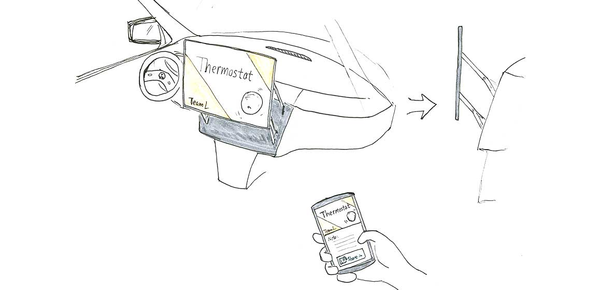

The goal is to design the next generation Volkswagen’s self-driving car that not only represents VW’s superior engineering achievements, but also has a strong emphasis on the human-centeredness in the design. We were tasked with providing VW with new ways to rethink the car interface that make people think differently about how they can and should use automated cars. We need to think about what is possible, and define the future of human-car interaction.
There are tons of possibilities that self-driving cars can improve our lives. We, at first, focused on people who live in big cities and need to driving every weekday. During our user research, we found that most of individuals complained about traffic jam in cities and the time they have to waste during their commute.
We struggled with what should be our design core for a long period of time. Finally, all of us agreed that traffic jam in big cities is a very complicated problem and due to this is a three-week project, we decided to focus on how self-driving cars can improve the communication experience while people driving with others.
Base on Mehrabian communications research, 55% of the meaning in conversations is Non-verbal (i.e facial expressions), which let us noticed that the current layout of vehicles hinders natural communication: people who sitting in the front can hardly see others in backseat and interact with them naturally.
After we agreed with our design core, we used golden questions, brainstorming and sketching to produce ideas related to improve communication experience. All of us agreed with the layout of current vehicles could be change when cars can driving by themselves. The front seats could rotate, so that all the passengers can face each other. In this way, people could talk more naturally like they are hanging out in a cafe or bar. The picture above shows we were using bodystorm to simulate and get inspiration.
On another hand, the car’s front layout is based on the past. In the middle, we provide a huge touch screen with voice control. The screen is the control hub for the whole car, such as playing the music, watch movies, present some documents, slides and so on.
In our iteration phase, we focused on the in-car system. We designed a location-based quiz game, which will be helpful to promote a conversation between passengers. We also detailed how people interact with our system.
Moreover, we refined the layout and added some more details to it. The seats can move back and forth and the back-rest is rotatable. This is much more efficient with space. A table is folded and stored in a small storage area in the middle under the back seat; which can be pulled out and propped in the center when required.
I interviewed people who related to our target group in research phase. After that, I sketched a lot to presented my ideas to my team. When I felt we were on a wrong way, I shared my concerns and discussed we should do in that circumstances.